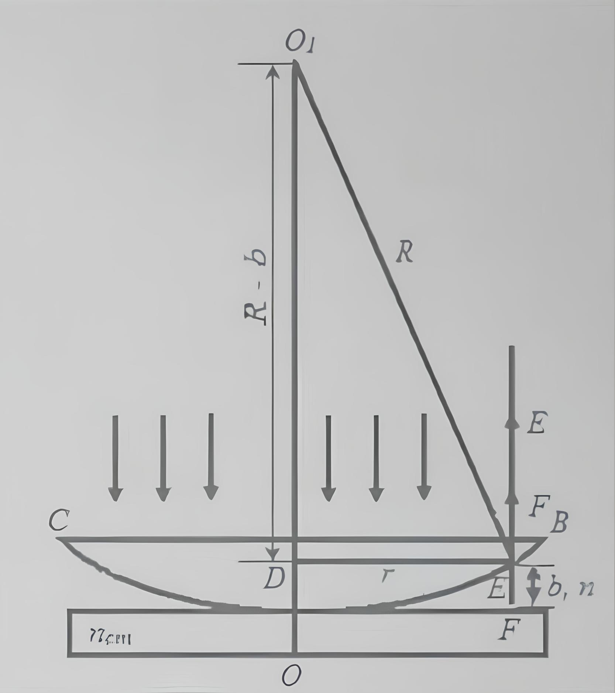
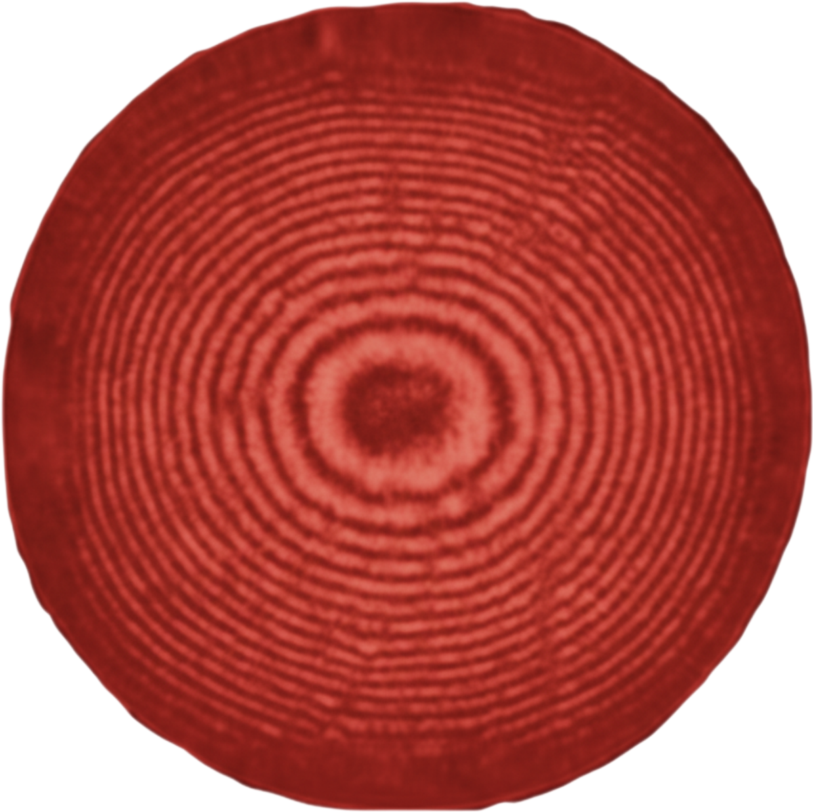
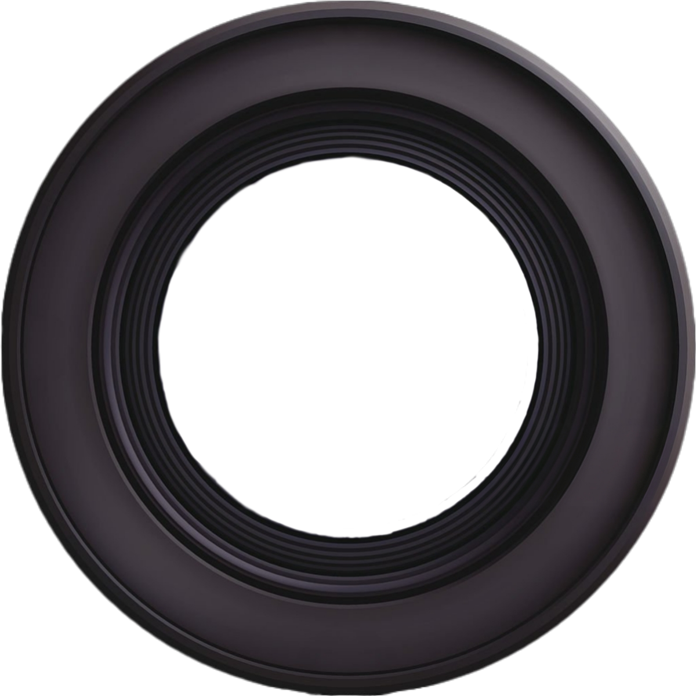

?
Вибрати лінзу
Вибрати світлофільтр
Алгоритм роботи

1. Встановіть червоний фільтр. Знайдіть центр кілець n0 (~5.00 мм).
2. Наведіть лінію на середину 3-го темного кільця. Це nзч.
3. Обчисліть радіус: r = |n0 - nзч|.
4. Для іншого фільтра знайдіть rx та обчисліть довжину хвилі:
λx = 700 · (rx² / rчерв²)


Окуляр-мікрометр
мм